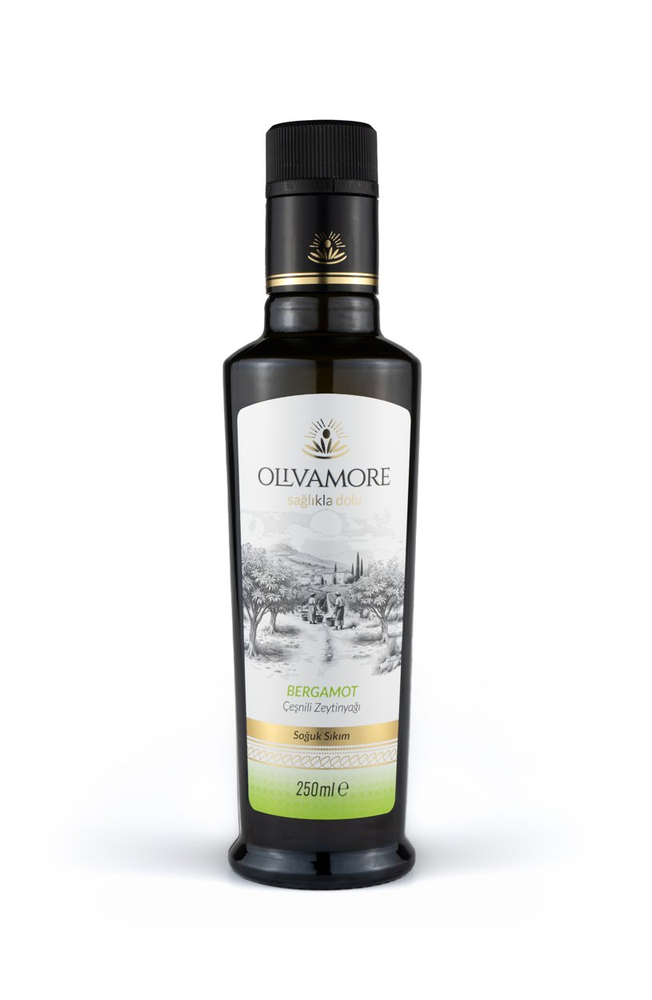

Tarif · Bergamot Çeşnili Bitirme Yağı
Bergamot Bitirişli Levrek
Beyaz balığın narin tadına bergamot parfümü değil, kontrollü bir kabuk kokusu eklemek için düşük dozlu bitiriş.
30 dk · 2 kişilik

Beyaz balığın narin tadına bergamot parfümü değil, kontrollü bir kabuk kokusu eklemek için düşük dozlu bitiriş.
30 dk · 2 kişilik
Narenciye notu: Bergamot yağı aroma verir, limon gibi asitlik sağlamaz. Balığı ekşitmek için limon suyu tarifte ayrı kullanılır.
Fırından sonra ve damla damla. Amaç balığı örtmek değil, kokusunu uzatmak.
